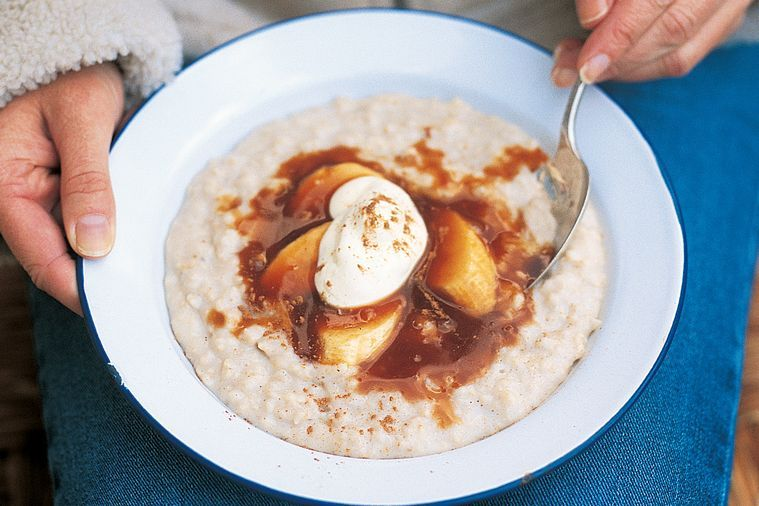

Porridge

Nordic society was build on this plate
The Porridge is known as one of the older hangover cures in Northen Europe.
Its simplicity and affordable price, made it a must go to the working class of the Nordic countries in order to survive
Ingredients
- 40gm. of Oats
- a teaspoon of sunflower seeds
- a teaspoon of pumpkin seeds
- half a teaspoon of chia
- 1/8 of a teaspoon of cinnammon
- 1/8 of a teaspoon of salt
- 50ml. milk
- 150ml. water
Steps
- Mix the dry ingredients
- Add them to a small pot, along the milk and water
- Cook on medium heat until it thickens, 3 min. aproximately
- Add any toppings of your preference. We found an apple compot to work wonders with it